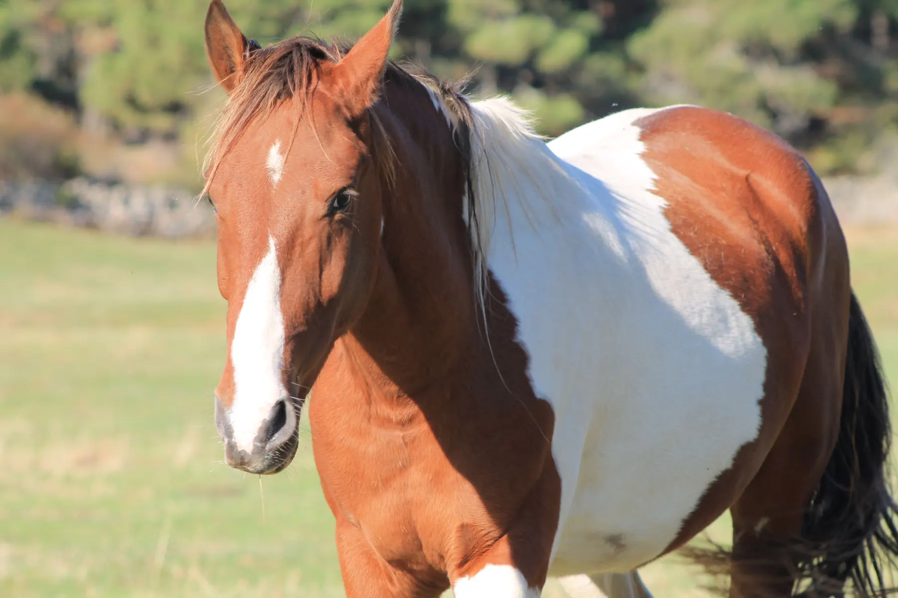

Historias de la manada
Wapi
Llegada: Agosto 2014
Con apenas tres meses y junto a su madre, fueron los que más nos costó económicamente poder salvarles de una muerte segura en la subasta. Wapi llama la atención por su pelaje, y hubo mucho ganadero interesado en comprarlo, pero finalmente conseguimos ganar la puja y pudo venir al Santuario junto con su madre.
Su historia
Una vida con nombre propio.
Con apenas tres meses y junto a su madre, fueron los que más nos costó económicamente poder salvarles de una muerte segura en la subasta. Wapi llama la atención por su pelaje, y hubo mucho ganadero interesado en comprarlo, pero finalmente conseguimos ganar la puja y pudo venir al Santuario junto con su madre.
Al año le adoptó una familia que sabemos que le cuidó muchísimo. A nosotros nos costó mucho asimilar el haberle separado de su madre Lakota. El día que nos llamaron para decir que venía de vuelta, fue uno de los días más felices del Santuario, y ya nunca más se irá de aquí: Su hogar.
Divertido, cariñoso, confiado, un amor de chico por dentro y por fuera y otro de los mimados del Santuario.
Sigue conociendo